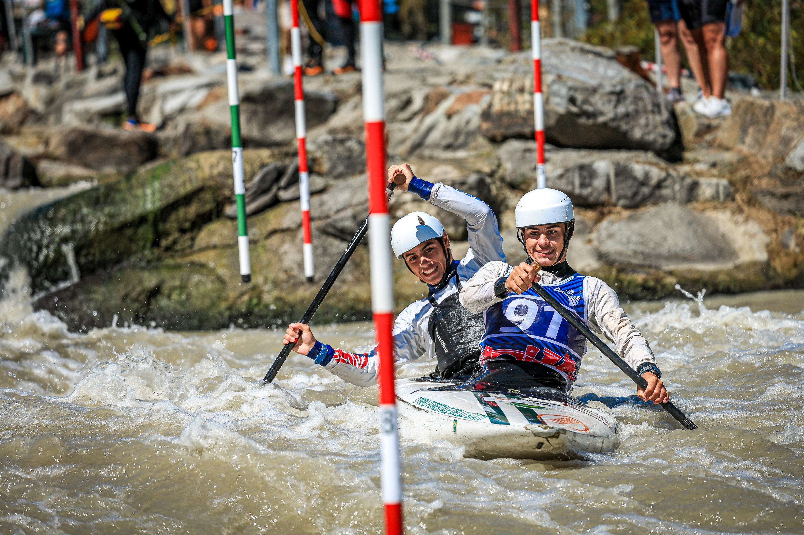
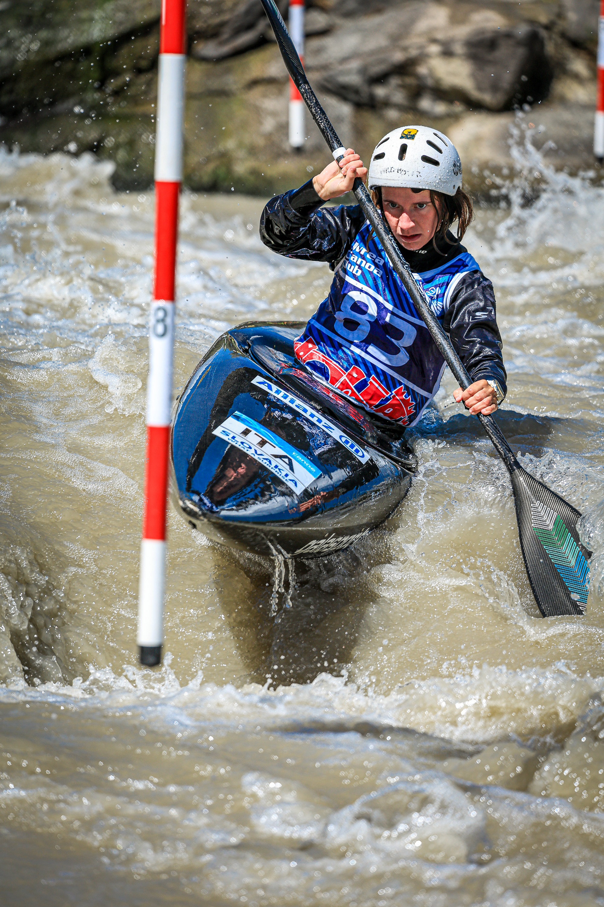

Italy crowned its 2026 senior canoe slalom champions at Ivrea’s Stadio della Canoa on Saturday, 22 August, before floodlit kayak cross finals closed a full day of racing on the Dora Baltea.
Elio Maiutto, representing Centro Sportivo Aeronautica Militare, won the men’s C1 title with a clean run of 88.97 seconds. Paolo Ceccon took silver in 90.58, while Raffaello Ivaldi placed third in 90.67 after a two-second penalty.
Marta Bertoncelli retained the women’s C1 crown for Centro Sportivo Carabinieri, completing an error-free run in 98.12. Teammate Elena Borghi was second in 101.96, with Elena Micozzi third in 105.96.

In men’s K1, Tommaso Panico of CUS Torino set the winning time at 83.13 with no penalties. Xabier Ferrazzi finished second in 84.16 after four penalty seconds, and Daniele Romano took bronze in 85.50.
Stefanie Horn marked her return to competition after maternity leave by winning the women’s K1 title for Gruppo Sportivo Marina Militare. Her clean 95.11 run put her 0.89 seconds ahead of Agata Spagnol, with Lucia Gabriella Pistoni third in 96.90.

De Gennaro and Pistoni take kayak cross titles
The evening kayak cross programme delivered the senior titles to Giovanni De Gennaro and Lucia Pistoni. Andrea Nardo and Xabier Ferrazzi completed the men’s podium; Chiara Sabattini and Margherita Alberto followed Pistoni in the women’s final.
The home club also had a prominent day. Ivrea Canoa Club won the men’s K1 team title through Mattia Cavagnetto, André De Manincor and Fabio Vanni. In women’s kayak cross, Margherita Alberto won the junior title, while Lucia Pistoni took both the U23 and senior crowns.
A dress rehearsal for the European Championships
The championships doubled as an important test on the course that will host the 2026 Canoe Slalom European Championships. The International Canoe Federation lists the Ivrea event for 23–27 September.
Before returning to Ivrea, the international season continues with World Cup racing at Vaires-sur-Marne from 3–5 September and the World Cup Final at La Seu d’Urgell from 10–13 September.
Image Media coverage
Reporting: IM News Editorial Desk
Photography: Adília Pinto / Image Media
Results checked against official Italian Canoe Kayak Federation records, the Ivrea Canoa Club report and the International Canoe Federation calendar.